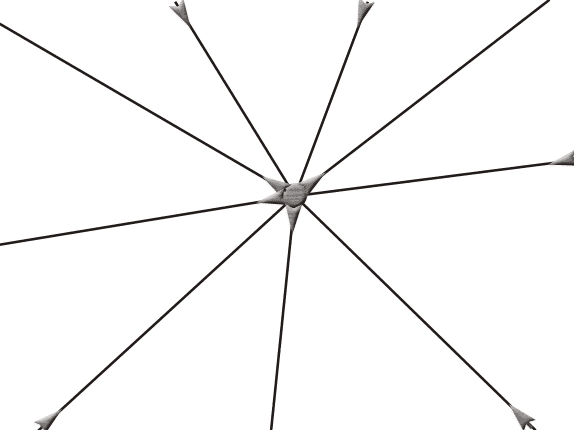

Kirchhoff's Current Law
Kirchhoff's Voltage Law
• Application
• Some Popular Conventions
Kirchhoff's Laws
There are some simple relationships between currents and voltages of different branches of an electrical circuit. These relationships are determined by some basic laws that are known as Kirchhoff laws or more specifically Kirchhoff Current and Voltage laws. These laws are very helpful in determining the equivalent electrical resistance or impedance (in case of AC) of a complex network and the currents flowing in the various branches of the network. These laws are first derived by Guatov Robert Kirchhoff and hence these laws are also referred as Kirchhoff Laws.
Kirchhoff's Current Law
In an electrical circuit, the electric current flows rationally as electrical quantity. As the flow of current is considered as flow of quantity, at any point in the circuit the total current enters, is exactly equal to the total electric current leaves the point. The point may be considered anywhere in the circuit.

Suppose the point is on the conductor through which the current is flowing, then the same current crosses the point which can alternatively said that the electric current enters at the point and same will leave the point. As we said the point may be anywhere on the circuit, so it can also be a junction point in the circuit. So total quantity of electric current enters at the junction point must be exactly equal to total quantity of electric current that leaves the junction. This is the very basic thing about flowing of electric current and fortunately Kirchhoff Current law says the same. The law is also known as Kirchhoff First Law and this law stated that, at any junction point in the electrical circuit, the summation of all the branch currents is zero. If we consider all the currents enter in the junction are considered as positive current, then convention of all the branch currents leaving the junction are negative. Now if we add all these positive and negative signed currents, obviously we will get result of zero.
The mathematical form of Kirchhoff's Current Law is as follows,
We have a junction where n number of beaches meet together.
Let's I1, I2, I3, ...................... Im are the electric current of branches 1, 2, 3, ......m and
Im + 1, Im + 2, Im + 3, ...................... In are the electric current of branches m + 1, m + 2, m + 3, ......n respectively.
The currents in branches 1, 2, 3 ....m are entering to the junction.
Whereas currents in branches m + 1, m + 2, m + 3 ....n are leaving from the junction.
So the currents in the branches 1, 2, 3 ....m may be considered as positive as per general convention and similarly the currents in the branches m + 1, m + 2, m + 3 ....n may be considered as negative.
Hence all the branch currents in respect of the said junction are -
+ I1, + I2, + I3,................+ Im, − Im + 1, − Im + 2, − Im + 3, .................. and − In.
Now, the summation of all currents at the junction is-
I1 + I2 + I3 + ................+ Im − Im + 1 − Im + 2 − Im + 3..................− In.
This is equal to zero according to Kirchhoff Current Law.
Therefore, I1 + I2 + I3 + ................+ Im − Im + 1 − Im + 2 − Im + 3..................− In = 0.
The mathematical form of Kirchhoff First Law is ∑ I = 0 at any junction of electrical network.
Video Presentation of Kirchhoff's Current Law - Basic Theory
Kirchhoff's Voltage Law
Kirchhoff Voltage Law
This law deals with the voltage drops at various branches in an electrical circuit. Think about one point on a closed loop in an electrical circuit. If someone goes to any other point on the same loop, he or she will find that the potential at that second point may be different from first point. If he or she continues to go to some different point in the loop, he or she may find some different potential at that new location. If he or she goes on further along that closed loop, ultimately he or she reaches the initial point from where the journey was started. That means, he or she comes back to the same potential point after crossing through different voltage levels. It can be alternatively said that net voltage gain and net voltage drops along a closed loop are equal. That is what Kirchhoff Voltage law states. This law is alternatively known as Kirchhoff Second Law.
If we consider a closed loop conventionally, if we consider all the voltage gains along the loop are positive then all the voltage drops along the loop should be considered as negative. The summation of all these voltages in a closed loop is equal to zero. Suppose n numbers of back to back connected elements form a closed loop. Among these circuit elements m number elements are voltage source and n - m number of elements drop voltage such as resistors.
The voltages of sources are V1, V2, V3,................... Vm.
And voltage drops across the resistors respectively, Vm + 1, Vm + 2, Vm + 3,..................... Vn.
As it is said that the voltage gain conventionally considered as positive, and voltage drops are considered as negative, the voltages along the closed loop are -
+ V1, + V2, + V3,................... + Vm, − Vm + 1, − Vm + 2, − Vm + 3,.....................− Vn.
Now according to Kirchhoff Voltage law, the summation of all these voltages results to zero.
That means, V1 + V2 + V3 + ................... + Vm − Vm + 1 − Vm + 2 − Vm + 3 + .....................− Vn = 0.
So accordingly Kirchhoff Second Law, ∑V = 0.
Application of Kirchhoff's Laws to Circuits
The electric current distribution in various branches of a circuit can easily be found out by applying Kirchhoff Current law at different nodes or junction points in the circuit. After that Kirchhoff Voltage law is applied, each possible loop in the circuit generates algebraic equation for every loop. By solving all these equations, one can easily find out different unknown currents, voltages and resistances in the circuits.
Some Popular Conventions We Generally use During Applying KVL
1) The resistive drops in a loop due to electric current flowing in clockwise direction must be taken as positive drops.
2) The resistive drops in a loop due to electric current flowing in anti-clockwise direction must be taken as negative drops.
3) The battery emf causing electric current to flow in clockwise direction in a loop is considered as positive.
4) The battery emf causing electric current to flow in anti-clockwise direction is referred as negative.
 by
by